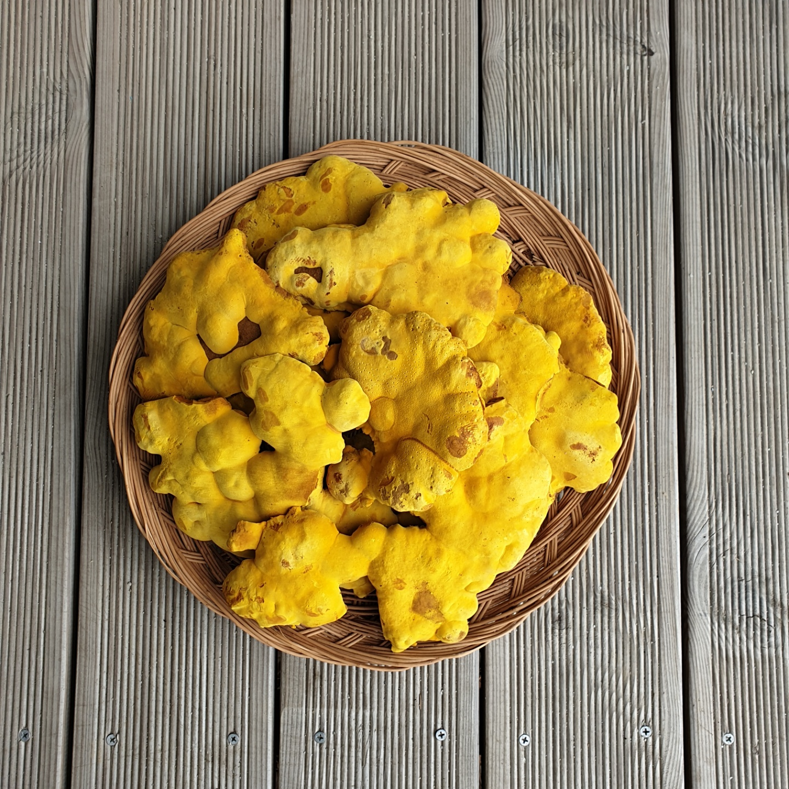
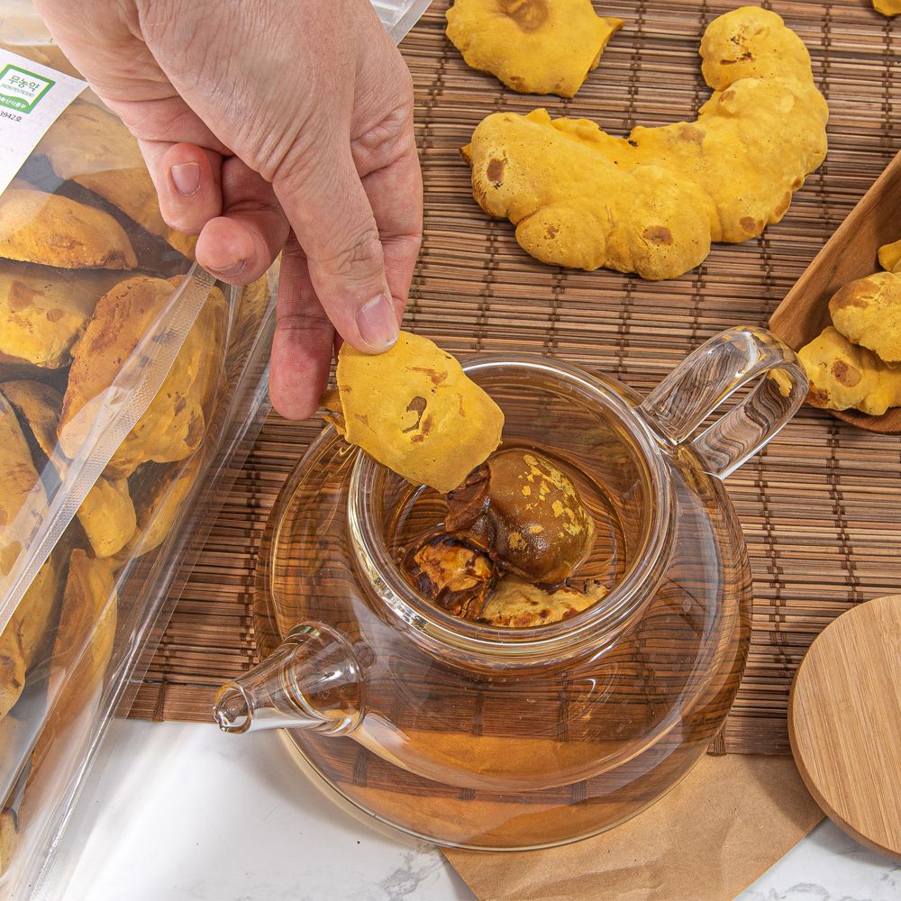

상황버섯
- 표고버섯
- 녹각영지버섯
- 상황버섯
상황버섯
향이 강하고 쓴맛이 나는 버섯. 물에 끓여서 우린 물을 마시거나 분말로 섭취한다. 약용버섯중에서도 뛰어난 효능을 자랑하는 상황버섯이지만 그중에서도 뽕나무에서 자라는 뽕상황은 몇백만원에 가까운 가격을 자랑하며 굉장히 진귀한 취급을 받는다.
의외로 상이죽이라는 요리에 들어가기도 한다.강원도 청정 유기농 참나무 톱밥과 변산반도에서 생산된 쌀의 미강과 청정지하수로 배합한 100% 국산배지를 직접 만들어 직접 살균,접종 한 후 배양실에서 5개월 배양한 후 생육합니다.